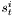

Introduction
NeuroLab is a class library which offers simulation of stochastic differential (integral) equations, as well as recording and display of data. Its main use is intended to be in the neuroscience field. Please find the source code on GitHub, github.com/jkanev/neurolab. Intended audience are researchers who want to run simulations of single or multiple connected neurons, analyse the results, and display / save to various file format.
Principles
Stochastic Variables (StochasticVariable), such as stochastic differential equations (DifferentialEquation), produce data. This data can be recorded (Matrix) by various estimators, which look for mean, variance and/or higher moments. Using a display (Display) the data can then be displayed, compared to analytical functions (Function), and saved as data (gnuplot format), or postscript file, ready to be included in your paper.
Stochastic differential equations can be interpreted in the Ito or in the Stratonovich sense. The DifferentialEquation class lets you switch between these two versions, even at runtime.
Data can be recorded conditionally. This means the mean (or any other moment) of a process as function of the time distance to an observed event can be taken. This is done by a ConditionalEstimator, which records the time course of a stochastic variable (StochasticVariable) before and after an observed event (Event).
Simulations
A leaky integrate-and-fire neuron is implemented (IfNeuron), which can be calibrated automatically to give a certain response rate (IfNeuron::calibrate()). A neuron is also a SDE, so you may set up small neural networks, having a system of inter-dependent SDEs, where mutual dependencies are allowed as well. Since a neuron produces events (spikes), you can also do spike-triggered averaging.
A neuron may receive its stimulus via three different ways:
An independent stochastic process. These are objects of the classes Poisson, Wiener, WienerCpp. They can be linked to a neuron with the IfNeuron::addStimulus() method. Each such object may drive one or many neurons.
A dependent stochastic process. A Noises object produces NoiseSource objects which resemble poisson and wiener processes, and which may be correlated. It is even possible to correlate a wiener and a poisson process.
Another neuron. In this case a synapse has to be built, which connects the neurons. Possible classes are Synapse (a simple synapse which transforms the spike events of the pre-synaptic neuron into Zeros and Ones [multiplied by a weight factor]), or SimpleSynapse (a more complex synapse, which is driven by a differential equation).
Example
Lets look at a simple example. You want to create two conductance-based leaky integrate-and-fire neurons (called nrnOne and nrnTwo), each inhibiting the other one, and both receiving some excitatory noise (noiseOne and noiseTwo). You then want to record the spike triggered average stimulus of one neuron (you expect some positive exponential spike), and the same average stimulus, but triggered on the spikes of the inhibited neuron (you expect some broader curve, pointing downwards).
You also want both neurons to be spiking with a rate of 5 Hz and want to calibrate that automatically, by adjusting the threshold.
Here's what you do:
The software runs, and you see following output:
and then
Now the following two pictures are shown as dialog windows, and also saved as png to the location "data/CoupledNeuronsRsc.png" and "data/CoupledNeuronsSample.png", as you've defined in the argument to the Display class:


At last the configuration is outputted to the terminal, as result of the calls "cout << noiseOne.getConfiguration()...". The complete configuration of the objects is shown, including the thresholds found in the automatic calibration.
Quality

(Ito) and
(Stratonovich) with  and
and  are simulated using the DifferentialEquation class. This equation has an explicit solution, which was plotted on top of the simulated version at different step sizes, relative error in percent shown next to it:
are simulated using the DifferentialEquation class. This equation has an explicit solution, which was plotted on top of the simulated version at different step sizes, relative error in percent shown next to it:


Ito and Stratonovich equations plotted on top of their explicit solutions, and relative error in percent, at a time step of 0.1ms.


Ito and Stratonovich equations plotted on top of their explicit solutions, and relative error in percent, at a time step of 0.01ms.


Ito and Stratonovich equations plotted on top of their explicit solutions, and relative error in percent, at a time step of 0.001ms.

Ito and Stratonovich equations plotted on top of their explicit solutions, and relative error in percent, at a time step of 0.0001ms.